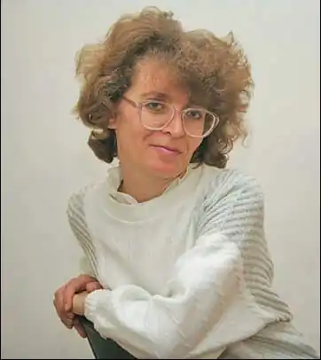

Гульнара Усеїнова народилася 2 березня 1968 року в м. Самарканді (Узбекистан). Закінчила історичний факультет Самаркандського державного університету ім. А. Навої. До Криму переїхала разом з батьками в 1989 році. Працювала в Координаційному центрі з відродження кримськотатарської культури, в редакції кримськотатарської художньої літератури видавництва "Таврія". Нині — спеціальний кореспондент газети "Голос Криму" в Сімферополі.
Авторка книг прози (назви подані в перекладі українською мовою): "Живі джерела духовності" (2001), "Конвалії" (збірка оповідань трьома мовами, 2008), "Мелодія дощу" (повість, 2009). Художні та публіцистичні твори авторки друкувалися в газетах, журналах та в збірнику сучасної кримськотатарської прози "Самотній пілігрим".
Гульнара Усеїнова — член Національної спілки письменників України з 2010 року.